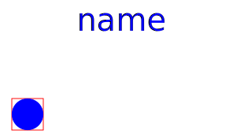
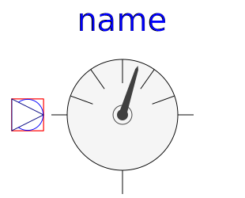

Package containing partial models from which all components (except Sources.AbsolutePressure) extend instantiating the medium and containing the thermodynamic equation(s) with semiLinear.
| Name | Description |
|---|---|
|
|
Simple friction model |
| Partial model of two port | |
|  SinglePortLeft | Partial model of a single port at the left |
| Partial model of ambient | |
| SinglePortBottom | Partial model of a single port at the bottom |
|
|
Partial model of absolute sensor |
|  RelativeSensor | Partial model of relative sensor |
| FlowSensor | Partial model of flow sensor |